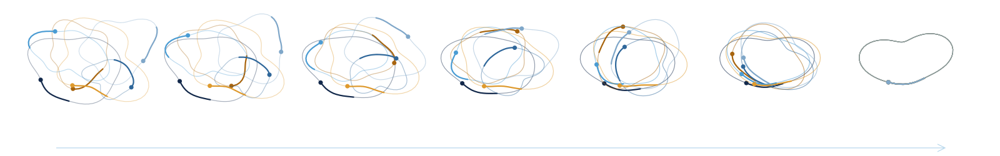

Artificial and Natural Intelligence
School of Data and Information Sciences · University of North Carolina at Chapel Hill
The Singh Lab builds computational models of complex biological and artificial systems, and tests whether those models truly explain the systems they imitate.
Our work spans artificial intelligence, data science, reinforcement learning, computational neuroscience, dynamical systems, and scientific simulation.
News: Satpreet (Sat) Singh joins the UNC School of Data and Information Sciences as an assistant professor in November 2026. Read the announcement

Research
Agents and simulation
Building embodied and multi-agent models to study behavior, interaction, sensing, signaling, and adaptation.
- Plume-tracking agents · Nature Machine Intelligence, 2023
- Zebrafish hunting with deep RL · CCN 2026
- Weakly electric fish agents · RLDM 2025, spotlight; NeurIPS 2025 workshop
- Deciphering animal communication with UMT (Proposal) · NeurIPS 2025 workshop
AI for Science & Medicine
Data-intensive models and agentic AI approaches for complex biological and biomedical systems.
- Naturalistic human brain-behavior analysis · J. Neuro Methods, 2021; AJILE12 dataset · Scientific Data, 2022
- Uncertainty-aware arrhythmia detection · Heart Rhythm O2, 2024
- Auditable LLMs for clinical interviews · EMNLP 2024 workshop
Neural computation
Understanding learned and biological computation through dynamical systems and interpretable models.
- Solution degeneracy in RNNs · NeurIPS 2025, spotlight
- InputDSA: input vs. recurrent dynamics · ICLR 2026
- Geometry of neural dynamics in RL controllers · RLC 2024 workshop
More papers, code, talks, and helpful links are on Satpreet (Sat) Singh's research page →
Join us
We are building a new interdisciplinary research group at UNC-Chapel Hill and are recruiting PhD students for Fall 2027.
Students can join the lab through the SDIS degree programs, such as the PhD in Data Science (apply by Dec. 15, 2026; Dec. 1 for early funding consideration). Joining through other graduate programs on campus may also be possible; details to come.
We welcome backgrounds in ML, data science, physics, applied math, CS/engineering, neuroscience, or biology. Strong quantitative skills matter more than prior neuroscience or biology experience. Other or unusual backgrounds are welcome too, especially with relevant real-world experience and strong quantitative skills.
Interested? Send an email with your CV and a few lines about your interests.

Collaborators
Our work has always involved close collaboration across disciplines.
Experimental and clinical partners: we are especially interested in groups with rich time-series data, or with systems where perturbation experiments are possible, who want models that make testable predictions rather than just fit data, and where a simulation- or dynamics-based model could sharpen their questions.
Theory and methods partners: we are equally keen to work with mathematicians, physicists, statisticians, computer scientists and others with complementary toolkits on open questions in artificial and natural intelligence.
If either sounds like you, please reach out.
